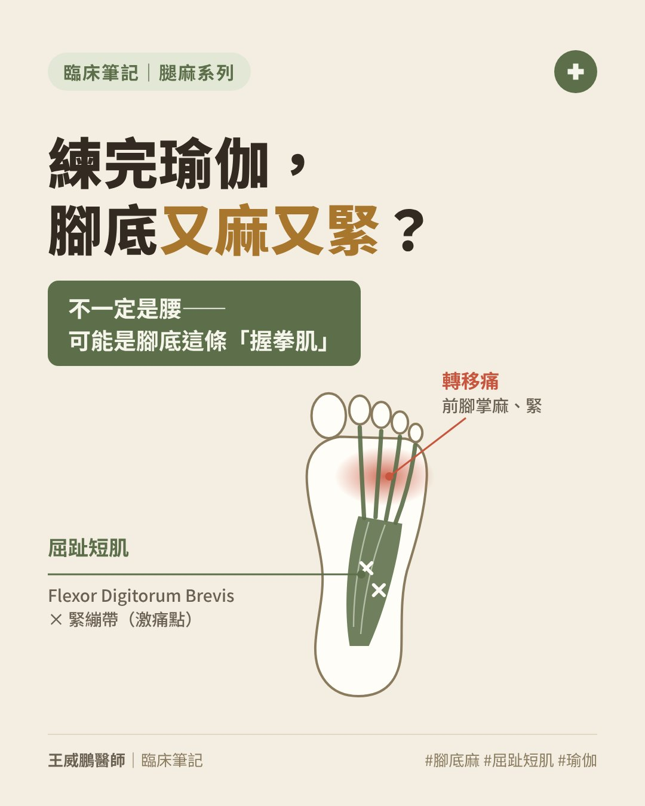
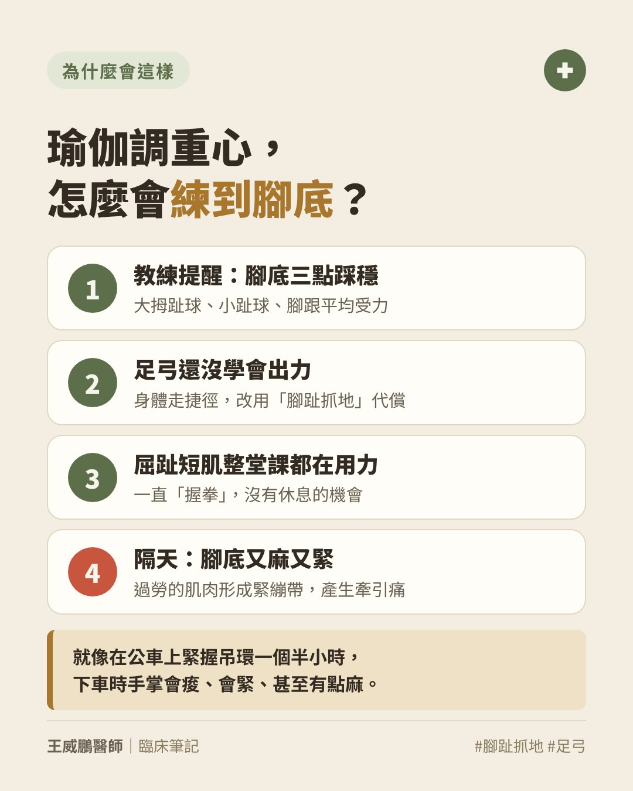
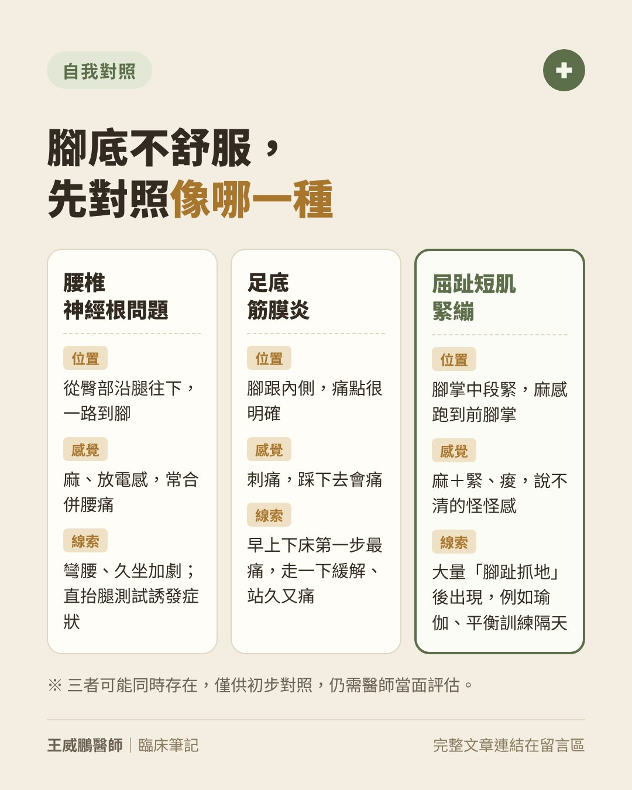
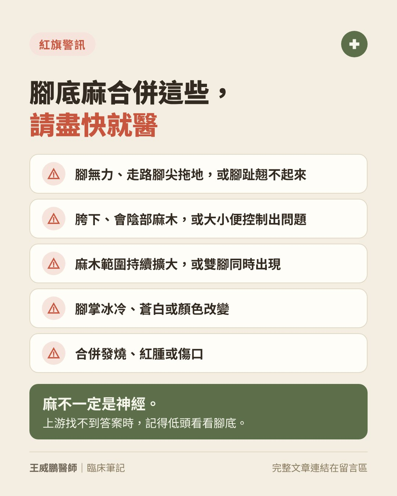

練瑜伽練到腳底麻？問題可能不在腰，而在腳底這條肌肉；屈趾短肌
一堂瑜伽課後，腳底開始麻
小晴是一位規律練瑜伽的上班族。那天上課，教練特別在意她站姿時足底的重心分布——大拇趾球、小趾球、腳跟要平均踩穩，腳趾不要翹起來。整堂課，教練一次又一次地幫她調整腳底的力量。
隔天，她來到門診，第一句話就是：「醫師，我的腳底好麻。」
腳底麻，第一個懷疑的是腰
聽到「麻」，我的第一個念頭是神經。瑜伽有不少前彎、扭轉的動作，如果腰椎的神經根受到壓迫或刺激，麻感很可能沿著小腿一路跑到腳底。
所以我先從腰開始查：
- 問病史：有沒有腰痛？麻感是從臀部往下延伸，還是只在腳底？
- 直抬腿測試（Straight Leg Raise, SLR）：用來看坐骨神經與腰椎神經根是否被拉扯出症狀。
- 感覺、肌力與反射：確認有沒有神經功能缺損。
這是臨床上很合理的第一步——但這次，腰的方向並沒有帶我們找到答案。
走出診間前的一句話
就在小晴收拾包包、準備離開診間時，她回頭補了一句：「其實昨天腳底麻的時候，還有一點緊緊的。」
麻，加上緊。這個組合讓我想到另一個方向：問題可能不是從上面傳下來的，而是就在腳底本身。
我請她重新躺回治療床，這次直接檢查腳底的肌肉。按到腳掌中段、靠近腳跟前方的位置時，摸到一條明顯緊繃的肌肉帶，壓下去，她馬上說：「就是這個感覺！」
這條肌肉，叫做屈趾短肌（Flexor Digitorum Brevis, FDB）。
回頭看，這也提醒了我自己：患者口中的「麻」，不一定是神經學上的麻。很多時候，肌肉的緊、痠、脹、說不出來的怪怪感，都會被形容成「麻」。多問一句「麻之外還有什麼感覺？」，往往就是破案的關鍵。
認識屈趾短肌：腳底最表層的「握拳肌」
屈趾短肌是足底的內在肌（intrinsic foot muscle），躺在足底筋膜（plantar fascia）正上方，是腳底肌肉裡最靠近皮膚的一層。

- 位置：從腳跟骨（跟骨結節）前緣出發，往前分成四條肌腱，接到第二到第五趾的中節趾骨。
- 功能：讓四根小腳趾往下彎——也就是「腳趾抓地」的動作；同時幫忙支撐足弓，在站立、平衡時穩定腳掌。
- 激痛點與轉移痛：激痛點多在腳掌中段；轉移痛則常落在前腳掌、第二到第四蹠骨頭下方一帶，也就是踩地時的「腳掌球」。
如果把腳當成另一隻手，屈趾短肌就像是負責「握拳」的肌肉。想像一下，在公車上緊握吊環一個半小時，下車時手掌會是什麼感覺？痠、緊、有點麻——腳底也是一樣。
另外一個重要的解剖細節：屈趾短肌的深層，就是足底外側神經（lateral plantar nerve）與血管走的通道。這也是為什麼腳底的處置，深度與方向都需要特別謹慎。
為什麼練瑜伽會練到它？
瑜伽老師常強調「腳底三點踩穩」——大拇趾球、小趾球、腳跟。方向是對的，足弓穩，往上的膝、髖、腰才有穩定的地基。
問題在於，很多人在沒有習慣用足弓出力的情況下，會不自覺地用「腳趾抓地」來代償。小晴就是這樣：
- 教練不斷提醒重心位置，她認真地一次次調整。
- 但足弓的穩定力還不夠，身體就走捷徑——腳趾一直往下扣。
- 屈趾短肌整堂課幾乎都在「握拳」，沒有休息的機會。
- 隔天，過勞的肌肉形成緊繃帶與激痛點，產生牽引痛（referred pain），腳底就出現了又麻又緊的感覺。

換句話說，教練的提醒沒有錯，只是身體還沒學會用對的肌肉去完成它。除了瑜伽，平衡訓練、赤腳運動、長時間穿太鬆的拖鞋（腳趾得扣住鞋子），也都是常見的過勞來源。
我們怎麼處理
確認症狀來自屈趾短肌的緊繃帶後，我們選擇用乾針（Dry Needling）針對緊繃處做鬆解。
乾針的做法是將細針精準刺入激痛點，誘發肌肉的局部抽動反應（local twitch response），讓一直「握緊拳頭」的肌纖維有機會放鬆下來。腳底的皮膚厚、感覺敏銳，深層又有神經血管通過，必要時可以搭配超音波確認肌肉層次與針尖位置，讓處置更安全。
治療結束後，小晴下床踩了踩地，表示腳底的麻感比進診間前輕了許多。不過，這並不代表每個人的腳底麻都能這樣處理——她之所以適合，是因為我們先排除了腰椎神經的問題，又在足底找到了能重現症狀的緊繃點。
鬆解只是第一步。如果足弓的穩定力沒有建立起來，下一堂瑜伽課，腳趾還是會去抓地。所以我們也提醒她：練習時讓腳趾放鬆、舒展地貼地，把重心的控制交給足弓而不是腳趾；也可以跟教練討論，先降低單腳平衡動作的時間與次數，再漸進加回來。
腳底麻，還可能是哪些問題？
小晴的故事是「肌肉」的版本，但腳底麻的來源很多，不能一律當成肌肉緊繃。下面是臨床上常需要鑑別的幾種情況：
| 可能來源 | 常見線索 |
|---|---|
| 腰椎神經根問題 | 合併腰痛、麻感從臀部沿腿往下、直抬腿測試誘發症狀 |
| 跗骨隧道症候群（Tarsal Tunnel Syndrome） | 麻痛集中在足底內側，敲打內踝後方會放電 |
| 莫頓氏神經瘤（Morton's Neuroma） | 麻痛集中在第三、四趾之間，穿窄鞋時加劇 |
| 周邊神經病變 | 雙腳對稱、從腳尖開始，像穿襪子般的麻；常見於糖尿病患者 |
| 屈趾短肌等足底肌肉緊繃 | 麻合併緊、痠；有過度使用的情境；按壓緊繃帶可重現症狀 |
跟足底筋膜炎怎麼分？
腳底不舒服，很多人第一個聯想到的是足底筋膜炎（Plantar Fasciitis）。屈趾短肌剛好躺在足底筋膜正上方，兩者還共用跟骨前緣的附著點——住得太近，症狀自然容易被搞混。
| 比較項目 | 足底筋膜炎 | 屈趾短肌激痛點 |
|---|---|---|
| 疼痛位置 | 腳跟內側、筋膜附著點，點狀壓痛很明確 | 腳掌中段緊繃，疼痛或麻感會轉移到前腳掌 |
| 疼痛性質 | 刺痛、踩下去會痛 | 痠、緊、麻，說不清楚的怪怪感 |
| 時間規律 | 早上下床第一步最痛，走一下稍微緩解，站久又加劇 | 多在大量使用腳趾抓地後出現，如瑜伽、平衡訓練的隔天 |
| 理學檢查 | 把大拇趾往上扳（絞盤測試，Windlass test）會誘發腳跟痛 | 按壓腳掌中段的緊繃帶可重現症狀；腳趾用力往下扣或小腳趾被往上扳時不適 |
| 超音波表現 | 筋膜增厚（常以超過 4 mm 作為參考）、回音變低 | 筋膜厚度多半正常；問題在筋膜上方的肌肉層 |

這兩者也可能同時存在。臨床上常看到足底筋膜炎的患者，腳趾不自覺用力抓地來「保護」腳跟，久了連屈趾短肌也一起緊繃——只處理筋膜，腳底可能還是緊；只鬆肌肉，腳跟可能還是痛。所以評估時，兩個層次我都會一起看。
這些警訊，請盡快就醫
- 腳無力、走路腳尖拖地，或腳趾翹不起來
- 胯下、會陰部麻木，或大小便控制出問題
- 麻木範圍持續擴大、雙腳同時出現
- 腳掌冰冷、蒼白或顏色改變
- 合併發燒、紅腫或傷口

結語
腳底麻，我們很自然會往上找——找腰、找神經。這是對的第一步，但不該是唯一一步。
小晴的答案，藏在她離開診間前說的那句「還有一點緊」。仔細聽患者怎麼形容自己的不舒服，再用雙手去確認，往往比任何檢查都更接近問題的核心。
麻不一定是神經，上游找不到答案時，記得低頭看看腳底。
如果你也有腳底麻、緊的困擾，建議尋求專業醫師做完整的理學與神經評估，先釐清來源，再決定治療方向。
治療前須知
乾針屬於侵入性治療，治療後可能出現局部痠痛、脹痛或小範圍瘀青，多半數天內消退；少數情況可能有感染或暈針反應。正在服用抗凝血劑、有凝血功能異常、糖尿病控制不佳、腳部有傷口或皮膚感染者，請先告知醫師，由醫師評估是否適合。
本文僅供醫療衛生教育參考，不能取代醫師的診斷與治療。每個人的病情、體質與治療反應不同，文中提及的治療方式並非適用於所有人，亦不保證療效；侵入性治療可能伴隨副作用與風險。如有身體不適，請尋求合格醫療專業人員當面評估。
參考資料
- Simons DG, Travell JG, Simons LS. Travell & Simons' Myofascial Pain and Dysfunction: The Trigger Point Manual. Vol. 2, Lower Half of Body.（足部淺層內在肌章節）
- triggerpoints.net：Flexor Digitorum Brevis (Foot) Trigger Point Diagram